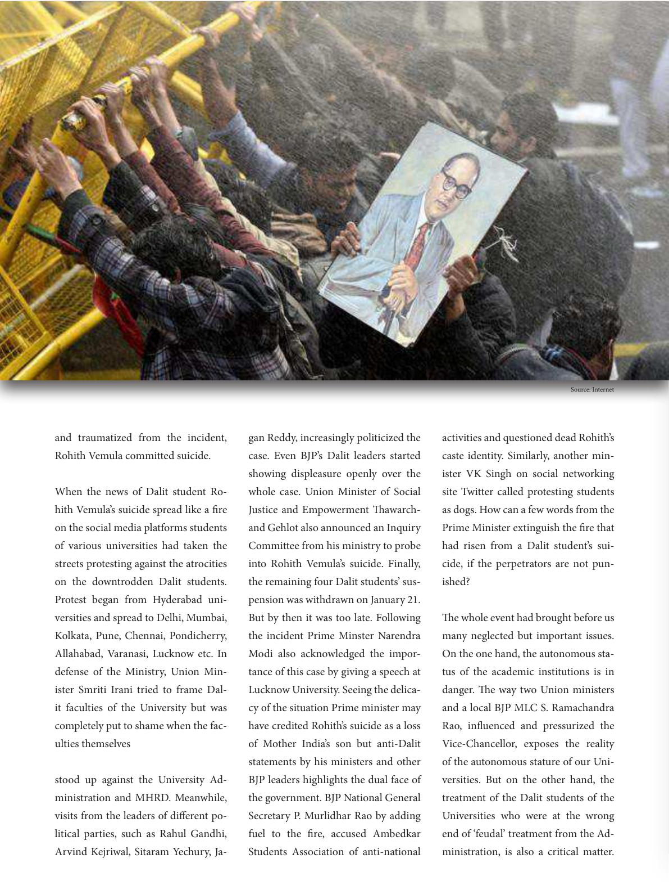

and traumatized from the incident,
Rohith Vemula committed suicide.
When the news of Dalit student Ro-
hith Vemula’s suicide spread like a re
on the social media platforms students
of various universities had taken the
streets protesting against the atrocities
on the downtrodden Dalit students.
Protest began from Hyderabad uni-
versities and spread to Delhi, Mumbai,
Kolkata, Pune, Chennai, Pondicherry,
Allahabad, Varanasi, Lucknow etc. In
defense of the Ministry, Union Min-
ister Smriti Irani tried to frame Dal-
it faculties of the University but was
completely put to shame when the fac-
ulties themselves
stood up against the University Ad-
ministration and MHRD. Meanwhile,
visits from the leaders of dierent po-
litical parties, such as Rahul Gandhi,
Arvind Kejriwal, Sitaram Yechury, Ja-
gan Reddy, increasingly politicized the
case. Even BJP’s Dalit leaders started
showing displeasure openly over the
whole case. Union Minister of Social
Justice and Empowerment awarch-
and Gehlot also announced an Inquiry
Committee from his ministry to probe
into Rohith Vemula’s suicide. Finally,
the remaining four Dalit students’ sus-
pension was withdrawn on January 21.
But by then it was too late. Following
the incident Prime Minster Narendra
Modi also acknowledged the impor-
tance of this case by giving a speech at
Lucknow University. Seeing the delica-
cy of the situation Prime minister may
have credited Rohith’s suicide as a loss
of Mother India’s son but anti-Dalit
statements by his ministers and other
BJP leaders highlights the dual face of
the government. BJP National General
Secretary P. Murlidhar Rao by adding
fuel to the re, accused Ambedkar
Students Association of anti-national
activities and questioned dead Rohith’s
caste identity. Similarly, another min-
ister VK Singh on social networking
site Twitter called protesting students
as dogs. How can a few words from the
Prime Minister extinguish the re that
had risen from a Dalit student’s sui-
cide, if the perpetrators are not pun-
ished?
e whole event had brought before us
many neglected but important issues.
On the one hand, the autonomous sta-
tus of the academic institutions is in
danger. e way two Union ministers
and a local BJP MLC S. Ramachandra
Rao, inuenced and pressurized the
Vice-Chancellor, exposes the reality
of the autonomous stature of our Uni-
versities. But on the other hand, the
treatment of the Dalit students of the
Universities who were at the wrong
end of ‘feudal’ treatment from the Ad-
ministration, is also a critical matter.
Source: Internet